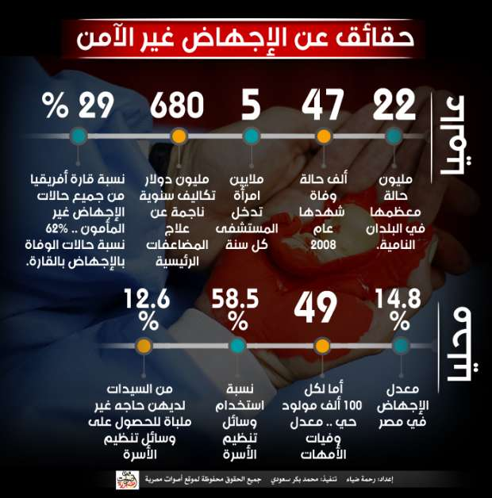
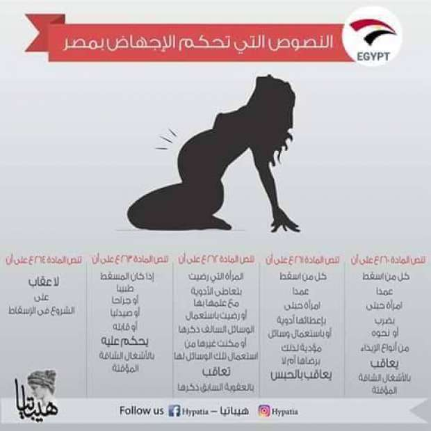
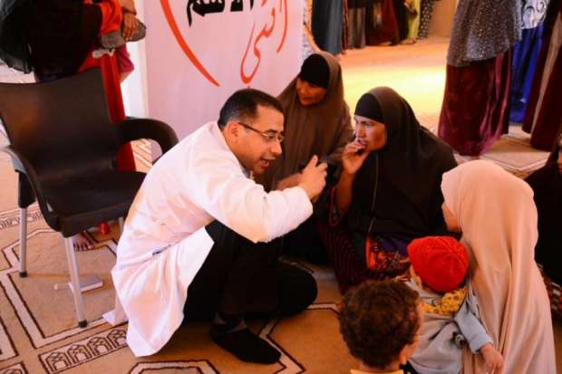
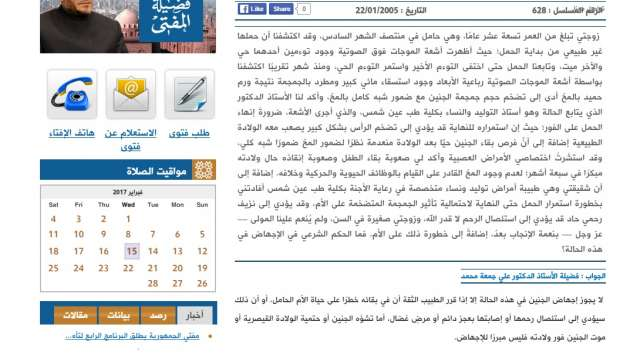
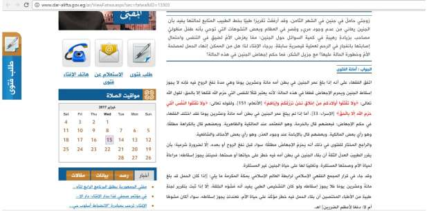
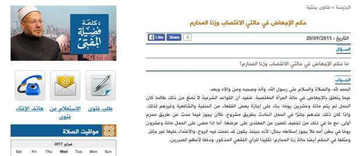

أحدث الأخبار
- الزمالك يكتسح رينجرز النيجيري بأربعة أهداف مقابل هدف وحيد
- القضاء الإداري يقضي بحل اتحاد الكرة وبطلان الانتخابات الأخيرة
- مقتل 3 أشخاص وإصابة 3 آخرين في حادث مروري بالبحيرة
- وزير الخارجية يجري اتصالاً مع رئيس المجلس الرئاسي الليبي
- عاصمة مصر تتجه لزيادة سكانية نصف مليون العام الجاري
- باولو يقود هجوم الزمالك أمام رينجرز في دوري الأبطال
- المالية تعفي المطاعم غير السياحية من ضريبة القيمة المضافة بشروط
- "القضاء الإداري" يلزم الجامعة الأمريكية بتحصيل مصروفاتها بالجنيه المصري
الإجهاض الآمن .. مطالبات حقوقية تصطدم بالمجتمع والقانون

صورة من رويترز
22 مليون حالة إجهاض غير آمن يشهدها العالم سنويا، يحدث معظمها في البلدان النامية، يروح ضحيتها آلاف النساء وتسجل القارة الأفريقية وحدها 62% من حالات الوفاة.
هذه الأرقام المفزعة دفعت حقوقيين ونشطاء في بلدان مختلفة حول العالم للمطالبة بالسماح للنساء بالإجهاض الآمن، وهو ما استجابت له بعض الدول مثل أمريكا وعدد كبير من دول أوروبا وقننت الإجهاض، فيما لا يزال حقوقيون في دول أخرى من بينها مصر يرفعون مطالبهم على استحياء دون أن تلقى صدى حتى الآن لدى المسؤولين.
وقدرت دراسة أعدها المجلس الدولي للسكان بالتعاون مع الجمعية المصرية لرعاية الخصوبة أن معدل الإجهاض في مصر يقترب من 14.8% لكل 100 مولود، فيما قالت وزارة الصحة إن الإجهاض تسبب في 1.9% من الوفيات المتعلقة برعاية الأمومة في عام 2006.

حقائق عن الإجهاض- إنفوجراف لأصوات مصرية
وتعرف منظمة الصحة العالمية الإجهاض غير المأمون بأنه "إنهاء الحمل إما على يد أشخاص يفتقرون إلى المهارات اللازمة وإما في وسط لا يمتثل للمعايير الطبية الدنيا أو في كلتا الحالتين".
وغالباً ما تلجأ المرأة ولا سيما المراهقة التي لا ترغب في حملها إلى الإجهاض غير المأمون عندما تعجز عن الحصول على خدمات الإجهاض المأمون لعدد من الأسباب في مقدمتها تطبيق قوانين تقييدية للإجهاض.
*القانون الحالي
وطبقًا لقانون العقوبات، فإن المواد 260 و261 و262 و263، تعتبر الإجهاض جنحة وقد تتحول لجناية عقوبتها الأصلية الحبس لمدة تتراوح من 24 ساعة إلى 3 سنوات وقد تصل إلى السجن المشدد، ويمكن للقاضي تخفيف العقاب إذا تمت الجريمة بدافع معقول، كالتخلص من طفل مصاب بمرض خطير، وإذا كان الحمل خطرًا على حياة المرأة أو هناك تشوهات بالجنين. وفي هذه الحالات لا يكون هناك عقاب يقع على المرأة.
ولا يوجد أي استثناءات لهذا القانون إلا في لائحة آداب المهنة الخاصة بالأطباء والتي تسمح للأطباء بإجراء عمليات الإجهاض في حالة تعرض حياة الأم أو صحتها للخطر.
وبحسب المادة 262 من قانون العقوبات، فإن الطبيب أو الصيدلي أو الجراح الذي يقوم بالإجهاض سواء بإجراء عملية جراحية أو بإعطاء المرأة أدوية تساعد على الإجهاض بدون ضرورة طبية، قد تصل عقوبته للسجن المشدد.
* الإتاحة الكاملة أم الاستثناءات؟
ويختلف الحقوقيون ومنظمات المجتمع المدني فيما بينهم بشأن الإجهاض الآمن؛ فهناك من يطالب بالسماح للمرأة بالإجهاض في حالات استثنائية مثل الاغتصاب وزنا المحارم وتشوه الأجنة ووجود خطر على حياة الأم، ومن يرى أحقية المرأة في اتخاذ قرار الإجهاض وفقا لأي سبب.
وتتبنى مبادرة هيباتيا مطلب الإجهاض الآمن للنساء، حيث طالبت مجلس النواب بتعديل المواد الخاصة بالإجهاض في القانون المصري، في منتصف ديسمبر الماضي ولا زالت تعمل على التوعية بمخاطر الإجهاض غير المأمون على صحة النساء لتحقيق قبول مجتمعي لمطلبها.
وقالت فاطمة الشريف، مؤسسة المبادرة، لأصوات مصرية، "من حق أي ست عاوزة تجهض أنها تروح مستشفى لائقة وتستعين بأطباء أكفاء من غير خوف من العقوبة القانونية، وحطينا في التصور اللي عملناه إن الإجهاض يحصل قبل مرور 120 يوم على الحمل 120 قبل ما تدب الروح في الجنين عشان منصطدمش بالرأي الشرعي ومازلنا بنحاول التواصل مع نواب في البرلمان لطرح التصور للمناقشة داخل المجلس".

النصوص القانونية التي تحكم الإجهاض في مصر - الصورة من صفحة مبادرة هيباتيا على فيس بوك
وترى أن السماح للنساء بالإجهاض الآمن من شأنه أن يحد من ظاهرة أطفال الشوارع أو وجود أطفال غير مرغوب فيهم، كما يحمي المرأة من اللجوء لعيادات تحت بير السلم أو أي طرق غير آمنة أخرى ربما تؤدي لمضاعفات كالنزيف أو حتى الوفاة.
وهيباتيا هي مبادرة نسوية منبثقة من مؤسسة مانديلا للحقوق والحريات، تم تأسيسها في ديسمبر 2012 بهدف تأمين الفتيات من التحرش والاغتصاب الميداني، وتقديم دعم قانوني ونفسي للنساء المعنفات، والعمل على تعديل مواد خاصة بالمرأة في القوانين.
وأضافت مؤسسة المبادرة "القانون يجعل المرأة المغتصبة تربي طفل شخص اعتدى عليها دون أي مراعاة لنفسية الأم وكذلك الحال بالنسبة لزنا المحارم".
وتتوقع أن يقابل مقترحهم حال النظر إليه بعين الاعتبار بالهجوم والانتقادات قائلة "بالتاكيد هيكون فيه رفض مجتمعي في البداية لكن ده بيحصل مع أي فكرة جديدة بيقاومها الناس وبعدها بيتقبلها المجتمع تدريجيا وبنحاول نشتغل على الشق الخاص بالتوعية من خلال صفحتنا على فيس بوك".
وأضافت "بنحاول نعمل حملات توعية على أرض الواقع، وتواصلنا مع مجلس أمناء حزب المصريين الأحرار، من يومين، وتبرعوا بتوفير مكان لعمل ندوات للتوعية بالصحة الإنجابية يحاضر فيها أطباء عن خطورة الإجهاض غير الآمن لرفع وعي النساء والمجتمع".
ومن جانبه يقول الحقوقي أحمد أبو المجد، مدير مؤسسة حقنا لحقوق الإنسان، إن"من حق المرأة أن تقرر الإنجاب أو عدمه، لأنه عملية مرهقة نفسيا وبدنيا ولابد أن يقابلها حق في الاختيار".
ويرى أن "عدم السماح للمرأة بالإجهاض أمر لا علاقة له بالدين أكثر منه تحكما من السلطة الذكورية التي ترى المرأة مجرد وعاء للحمل والإنجاب".
وأضاف "القوانين بتتغير بتغير الزمان والمكان ومينفعش كل ما نطالب بتغيير تتسلط على رقابنا سيوف كتب الماضي واجتهادات فقهاء الماضي"، وشدد على ضرورة التوعية المجتمعية لنشر الفكرة وتقبلها.
في حين يربط البعض بين السماح للنساء بالإجهاض الآمن بحالات استثنائية حيث ترفع المبادرة المصرية للحقوق الشخصية، وتحالف "ريسرج" النسوي لدعم الحقوق والصحة الجنسية والإنجابية، مطلب الإجهاض الآمن في حالات وجود خطر على حياة أو صحة المرأة أو إذا كان الحمل نتيجة جريمة اغتصاب.
وتحالف "ريسرج" تحالف دولي يجمع نسويات شابات من دول مختلفة في العالم، معني بالصحة الإنجابية للمرأة.
وقالت المنظمتان في بيان مشترك يوم 28 سبتمبر الماضي- الذي يعد في دول كثير يوما عالميا للإجهاض الآمن- إن "مصر من أشد دول العالم تقييدا لحق الإجهاض إذ لا يبيح القانون المصري الإجهاض ﻷي سبب كان، ولا يسمح للناجيات من الاغتصاب واغتصاب المحارم بالحصول على حقهن في التخلص من الحمل غير المرغوب فيه، كما يعاقب القانون النساء اللاتي يلجأن إلى الإجهاض القصدي بالحبس".
وقالت داليا عبد الحميد عضو المبادرة المصرية للحقوق الشخصية لأصوات مصرية، إنهم يعملون حاليا على إعداد مشروع قانون لإلغاء العقوبة القانونية على الإجهاض في حالة الاغتصاب أو وجود خطر على حياة الأم، لافتة إلى أن على الرغم من الالتزام الأدبي بين الأطباء بالقيام بعملية الإجهاض في حالة تعرض حياة الأم إلى الخطر إلا أن القانون لا يكفل ذلك.
كما أشارت إلى عمل المبادرة حاليا على جمع شهادات من سيدات مررن بتجربة الإجهاض غير الآمن وجمع توقيعات من نسويات وشخصيات عامة والتواصل مع باقي المنظمات المهتمة بالإجهاض الآمن لخلق حالة زخم عند طرح مشروع القانون.
*تنظيم الأسرة البديل الآمن
وتتفق د.هالة الدمنهوري، أخصائية أمراض النساء والتوليد والباحثة في مجال الصحة الإنجابية، مع هذا الرأي مؤكدة أنها مع تعديل القانون لاستثناء بعض الحالات مثل تشوه الأجنة غير القابل للحياة أو في حالات الاغتصاب وفي حالة تأثير استمرار الحمل سلبيا على صحة الأم.
وقالت لأصوات مصرية "المطالبة بتقنين الإجهاض في المطلق هيخسرنا كتير لأنه هيعمل بلبلة ويصطدم بالشرعية والقانون والمجتمع، في وقت عندنا فيه قنوات تانية شرعية ومقبولة مجتمعيا للحفاظ على حياة السيدات وحمايتهن من تجربة الإجهاض المريرة".
وأوضحت استشاري الصحة الإنجابية "استخدام وسائل تنظيم الأسرة ممكن يجنب الست المضاعفات الخطيرة اللي ممكن تؤدي للموت نتيجة عمليات الإجهاض غير الآمنة في عيادات بير السلم".

صورة من صفحة مبادرة "أنتي الأهم" المعنية بصحة المرأة والطفل
وتتمثل المضاعفات الرئيسية التي تهدد الحياة وتنجم عن الإجهاض غير المأمون في نزف الدم والإصابة بالعدوى وتضرر الجهاز التناسلي وأعضاء الجسم الباطنية.
وبلغ معدل وفيات الأمهات إلى 49 أما لكل 100 ألف مولود حي عام 2015 بحسب وزارة الصحة.
وتصل نسبة وفيات الأمهات نتيجة نزيف ما بعد الولادة إلى 26.5%، وبنسبة 21.7% بسبب اضطرابات ضغط الدم.
وتابعت أن بعض السيدات المتزوجات يلجأن للإجهاض بسبب عدم اعتمادهن على وسائل تنظيم الأسرة إما نتيجة نقص الوعي أو عدم توافرها وغيرها من الأسباب التي يجب مناقشتها والعمل على إيجاد حلول لها.
وقال الجهاز المركزي للتعبئة العامة والإحصاء في بيان له مطلع العام الجاري(2017) إن 12.6% من السيدات لديهن حاجه غير ملباة للحصول على وسائل تنظيم الأسرة، أما لأسباب شخصية أو اجتماعية أو لعدم توافرها، ولكنهن في الحقيقة يرغبن في تأجيل الطفل التالي (المباعدة) أو إيقاف الإنجـاب كلياً (تحديد).
وقال تقرير صدر عن صندوق الأمم المتحدة للسكان عام 2009 إن تلبية الاحتياجات فيما يتعلق بتنظيم الأسرة والخدمات الصحية للأمهات والمواليد يمكن أن يمنع وفاة نحو 400 ألف امرأة و1.6 مليون مولود، كما يمكن أن يحد من الحمل غير المرغوب فيه بأكثر من الثلثين ومن عمليات الإجهاض غير الآمنة بنحو 75 %.
*الإجهاض أخف الضررين
واستطلعت "أصوات مصرية" رأي عدد من السيدات المتزوجات حول مسألة تقنين الإجهاض ومدى قبولهن لهذا الأمر.
وترفض هدى مجدي، محاسبة (25 عاما)، تقنين الإجهاض في المطلق لأنه "حرام شرعا"، وهو ما يستوجب عقاب مرتكبيه، ولكنها مع السماح به في بعض الحالات مثل الاغتصاب والزنا، قائلة "هو هيفضل حرام لكن إحنا في الحالة دي بننقذ الطفل من المعاناة اللي هيعيشها لما يجي الدنيا والناس تقول عليه ابن حرام وفي الغالب بعد ما يتولد هيترمي في الشارع أو في دار أيتام".
واعتبرت أن الإجهاض في هذه الحالة "أخف الضررين".
في حين ترى هالة ماجد، ربة منزل وأم لطفلين، أن من حق المرأة أن تقرر إذا كانت تريد الإنجاب أم لا، لأنها هي التي ستحمل وتلد وتتحمل مسؤولية الطفل الوافد إلى الدنيا، قائلة "المفروض ميبقاش فيه عقاب قانوني عليها ولا على الدكتور خاصة لو واحدة غلطت وعاوزة تستر على نفسها، وربنا هو اللي بيحاسب".
وأضافت "تجريم الإجهاض مش بيحل المسألة لأن الست لو عاوزة تجهض هتلجأ لأي طريقة، وده ممكن يتسبب في وفاتها بالنزيف أو نتيجة التلوث في العيادات اللي تحت بير السلم، ده غير البهدلة وكسرة النفس اللي بتحس بيها في أماكن زي دي، وأحيانا بيكون الدكاترة معدومي الضمير ويستغلوا وضعها خاصة لو رايحة لوحدها".
وبالمثل ترى سارة طوبار، كاتبة وإخصائية شؤون مالية، أن السماح للنساء بالإجهاض يصب في صالح الأمهات والأطفال، قائلة "الإجهاض هيحصل بشكل أو بأخر لكن بسبب التهديد والخوف بيتم في السر وبطرق تهدد صحة النساء أو انها تضطر تكمل الحمل وتجيب أطفال غير مرغوب فيهم وبالتالي غير أسوياء".
*القانون والشريعة
وعن إمكانية إجراء تعديل قانوني لاستثناء بعض الحالات المقترحة، قالت النائبة نشوى الديب إن إصدار أي قانون أو تعديل قانون قائم يتعلق بمسألة دينية يحتاج إلى فتوى من الجهة الرسمية المختصة وهي دار الإفتاء.
وأضافت "القرآن والسنة هم المصدر الرئيسي للتشريع وفقا للدستور وبالتالي منقدرش نطلع قانون زي كده إلا بموجب فتوى رسمية تبيحه".
وأشارت إلى معرفة مختلف جوانب القضية الاجتماعية والاقتصادية وتأثيرها النفسي، قائلة" دي كلها عوامل بيهتم بيها القرآن والسنة اهتمام شديد ولازم نوضحها واحنا بنطرح المسألة على علمائنا المستنيريين بحيث لاتسقط من الاعتبار عند إصدار الفتوى".
وقالت إنها لن تستطيع الإفصاح عن رأيها الشخصي في المسألة إلا بعد الاستماع إلى رأي الجهة الدينية المختصة.
في حين ترفض د.شادية ثابت عضو لجنة الصحة بمجلس النواب عمل أي استثناءات في القانون قائلة "لا الاغتصاب ولا زنا المحارم يبيح الإجهاض وكل الهدف من هذا الكلام فتح الباب للإجهاض وهو محرم دينيا والسماح به في حالات الزنا نشر للفاحشة".
وأضافت النائبة "دي إرادة ربنا سواء بالحلال أو الحرام .. ليه أحكم على الجنين بالموت، ده غير الخطورة اللي بتتعرض لها الست في الإجهاض .. ممكن يحصلها نزيف شديد ويؤدي للوفاة وربنا مبيحرمش حاجة إلا إذا كان فيها ضرر بالغ".
وتابعت "الإجهاض مش سليم طبيا ولا دينيا ومن الناحية الأخلاقية هيبوظ المجتمع كله".
ومن جانبه قال د.أحمد كريمة، أستاذ الفقه المقارن والشريعة الإسلامية بجامعة الأزهر، إن فقهاء الشريعة الإسلامية أجمعوا على تحريم الإجهاض إلا بناء على عذر طبي يقدمه أطباء من أهل الثقة يجعل في استمرار الحمل خطورة على حياة الأم، وعللوا ذلك بأن الحمل له حق الحياة فلا يجوز أن يعتدى عليه.
وبالنسبة لإمكانية استثناء بعض الحالات قال "بالنسبة لجريمة الزنا فمن ارتكب جريمة يتحمل وزرها وتابعاتها أما في جرائم الاغتصاب فإن الدولة تضع اسما صوريا لهذا الوليد في سجلاتها كأي مواطن أخر".
وقطع كريمة أنه لا يجوز الإجهاض في جميع الصور والحالات، قائلا "على الشخصيات الساعية إلى تحليل ما حرم الله أن يتقوا الله في أعراض الناس".
*فتاوى سابقة
وردت دار الإفتاء على تساؤلات مشابهة حول السماح بالإجهاض في حالات معينة مثل تشوه الأجنة عبر موقعها الرسمي أفادت بأن "الفقهاء اتفقوا على أنه إذا بلغ عمر الجنين في بطن أمه مائة وعشرين يومًا وهي مدة نفخ الروح فيه فإنه لا يجوز إسقاط الجنين ويحرم الإجهاض قطعًا في هذه الحالة؛ لأنه يعتبر قتلًا للنفس التي حرَّم الله قتلها إلا بالحق، أما إذا لم يبلغ عمر الجنين في بطن أمه مائةً وعشرين يومًا فقد اختلف الفقهاء في حكم الإجهاض: فبعضهم قال بالحُرمة، وهو المُعتَمَد عند المالكية والظاهرية. وبعضهم قال بالكراهة مطلقًا، وهو رأي بعض المالكية. وبعضهم قال بالإباحة عند وجود العذر، وهو رأي بعض الأحناف والشافعية".

صورة من فتوى نشرت على موقع دار الإفتاء المصرية
وقطعت أمانة الفتوى بأن "الراجح المختار للفتوى في ذلك أنه يَحرُمُ الإجهاضُ مطلقًا؛ سواء قبل نفخ الروح أو بعده، إلَّا لضرورةٍ شرعية؛ بأن يقرر الطبيبُ العدلُ الثقةُ أن بقاء الجنين في بطن أمه فيه خطرٌ على حياتها أو صحتها، فحينئذٍ يجوز إسقاطه؛ مراعاةً لحياة الأم وصحتها المستقرة، وتغليبًا لها على حياة الجنين غير المستقرة".

صورة من فتوى منشورة على موقع دار الإفتاء المصرية
في حين ردت دار الإفتاء على سؤال حول "حكم الإجهاض في حالة الاغتصاب والزنا" بتاريخ 20 سبتمبر 2015، أجازت فيه الإجهاض في هذه الحالة اعتمادا على إجازة بعض الفقهاء من الحنفية والشافعية بشرط آلا يمضي على الحمل 120 يوما بحيث لا تكون دبت فيه الروح، واعتبرت أن الإجهاض في هذه الحالة "دفعا لأعظم الضررين".

صورة من فتوى منشورة على موقع دار الإفتاء المصرية


تعليقات الفيسبوك